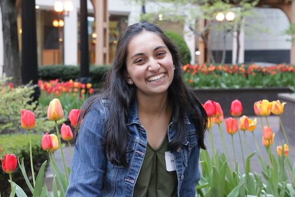

 I am a rising second year computer science major at the University of Chicago. I enjoy exploring the application of programming to a variety of fields ranging from computational biology to economics. On campus, I enjoy dancing as a choreographer for Apsara and SASA and making coding more accessible to girls through CompileHer.
C: Through my Software Development class, I worked on the World Description Language Team for a text-based adventure game. We worked in an Agile environment and followed scrum methodology.
HTML/CSS/JavaScript/jQuery: At Uncommon Hacks 2019, I created this interactive site.
HTML/CSS/JavaScript: This is my personal portfolio.